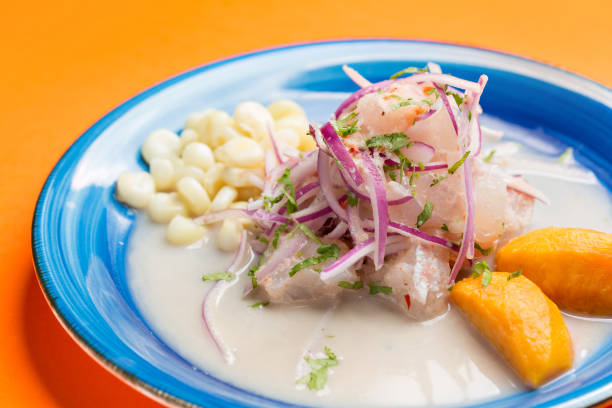

Ceviche Peruano

El ceviche peruano es un plato tradicional elaborado con pescado fresco marinado en jugo de limón, acompañado de cebolla morada, ají, cilantro y maíz. Es reconocido por su sabor refrescante y su importancia en la gastronomía del Perú.
Ingredientes
- 500 g de filete de pescado blanco (como lenguado o mero)
- 1 taza de jugo de limón fresco
- 1 cebolla morada, cortada en rodajas finas
- 1 ají limo o ají amarillo, sin semillas y picado finamente
- 1/4 de taza de cilantro fresco, picado
- Sal al gusto
- 1 taza de granos de maíz cocidos (opcional)
- Hojas de lechuga para servir
Preparación
- Corta el pescado en cubos pequeños y colócalos en un tazón grande.
- Agrega el jugo de limón al pescado y mezcla bien. Deja marinar durante unos 10 minutos.
- Incorpora la cebolla morada, el ají picado y el cilantro al tazón. Mezcla suavemente para combinar todos los ingredientes.
- Agrega sal al gusto y mezcla nuevamente.
- Si lo deseas, sirve el ceviche sobre hojas de lechuga y acompaña con granos de maíz cocidos.
- Disfruta de tu ceviche peruano fresco y delicioso.
Ir a inicio